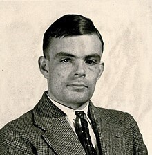

Alan Turing est un Mathématicien et cryptologue de l'angleterre qui inventa la « Bombe » en 1940. À l'origine, la machine Enigma fut conçue pour cryptée les messages militaires que les allemand pour que les au besoin de partage d'informations entre allemand sans que les anglais les comprenne. L'idée de base était polonaise mais Alan Turing la perfectionner en la rendant plus rapides à tester chaque clé de décodage.
Il publie en 1950 un article nommée Computing Machinery and Intelligence ou il propose une éxperience pour différencié une machine , d'une machine «consciente» Fonctionnant comme un test on discute avec la machine et que on peux donc différencier les machines . il dira dans cette article où il fait le « pari que d'ici cinquante ans, il n'y aura plus moyen de distinguer les réponses données par un homme ou un ordinateur, et ce, sur n'importe quel sujet ».